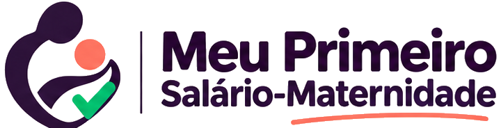
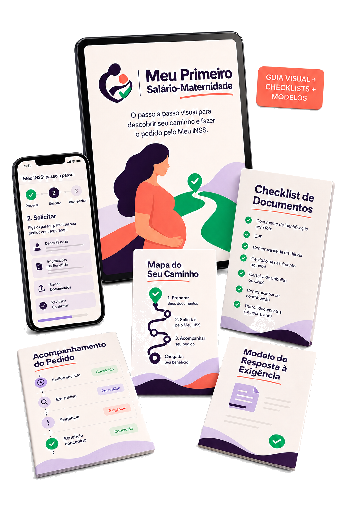

Preservar o benefício para você e seu bebê
Sem começar gastando parte dele com advogado em um pedido administrativo simples.

Passo a passo visual pra você entender se tem direito, reunir os documentos certos, fazer o requerimento pelo Meu INSS e acompanhar o pedido, sem depender de ninguém, mesmo se nunca tiver mexido no aplicativo.
✓ Acesso vitalício • 7 dias de garantia • pedido oficial no Meu INSS

apenas copiar e colar.
Pra sair da dúvida e saber exatamente o que fazer.
Consulte de novo se o INSS pedir algo a mais.
Sem promessa de aprovação, sem juridiquês e sem transformar um procedimento administrativo simples em algo mais assustador do que precisa ser.
Sem começar gastando parte dele com advogado em um pedido administrativo simples.
Saiba exatamente o que conferir para avançar com menos risco de erro.
Mesmo começando do zero e mesmo se você nunca tiver mexido no aplicativo.
“Eu estava desempregada e achei que salário-maternidade não era para mim. O guia não me prometeu que eu receberia, mas me mostrou exatamente o que eu precisava verificar antes de desistir. Finalmente entendi que ‘não sei se tenho direito’ não é a mesma coisa que ‘não tenho direito’.”
Goiânia-GO
“Eu sabia que o pedido no INSS era gratuito, mas não sabia por onde começar nem em qual informação confiar. Pelo valor do guia, valeu muito a pena ter tudo organizado em um só lugar: o que verificar, os documentos e como acompanhar. Economizei tempo, pesquisa e muita insegurança.”
Dourados-MS
“Eu abria o Meu INSS e já ficava perdida, com medo de clicar na opção errada. Ver as etapas organizadas e saber quais documentos conferir antes de começar me deu muito mais segurança. Parecia complicado porque eu estava tentando descobrir tudo sozinha.”
Brasília-DF
“Eu achava que teria que contratar um advogado antes mesmo de entender minha situação. O guia me ajudou a perceber o que eu conseguia organizar sozinha em um pedido simples e também deixou claro quando seria melhor procurar ajuda profissional. Isso me deu autonomia sem me fazer agir no escuro.”
Sobral-CE
Você não precisa entender de Previdência. só seguir o passo a passo.
Você está desempregada, trabalhou pouco, é MEI ou autônoma e concluiu que não tem direito sem antes entender o que realmente precisa verificar.
Com enxoval, exames e as despesas do bebê chegando, pagar alguém para um procedimento administrativo simples pode pesar justamente quando cada real importa.
Você não sabe onde clicar, quais documentos separar nem como preencher o pedido. Quanto mais adia, mais difícil parece resolver tudo depois.
Você não precisa passar dias vendo vídeos, tentando entender regras ou descobrindo sozinha o que fazer no Meu INSS.
Antes de sair preenchendo qualquer coisa, você consulta um mapa simples para entender o que precisa verificar na sua situação.
com segurança, sem erros, do início ao fim.
Você abre o Meu INSS, acompanha o passo a passo visual, separa os documentos da lista e preenche cada etapa sabendo o que está fazendo.
É olhar, conferir e seguir.
Se o INSS pedir uma informação complementar, você não fica procurando o que escrever: consulta o modelo, adapta os seus dados e usa.
Sem começar uma resposta do zero.
Tudo organizado para você abrir, conferir a etapa e executar com mais clareza.
Para você descobrir rapidamente o que já está organizado, o que ainda precisa conferir e evitar começar o pedido no escuro.
Acesso imediato, material vitalício e garantia de 7 dias para você conhecer com calma.
Guia visual completo + modelos prontos + bônus de preparação
De R$ 90
Por apenasR$ 27Pagamento único • Acesso imediato • Garantia incondicional de 7 dias
Salário-maternidade não é um benefício exclusivo de quem está atualmente trabalhando de carteira assinada. O próprio INSS relaciona diferentes categorias que podem solicitar o benefício, e pessoas desempregadas ainda podem manter a qualidade de segurada em algumas situações.
O INSS disponibiliza o requerimento do salário-maternidade pelos canais digitais. Isso não elimina detalhes importantes, mas mostra que usar o Meu INSS corretamente é um caminho oficial, não uma improvisação.
Existem duas coisas diferentes: acesso gratuito ao serviço e clareza para usar o serviço. O Meu INSS pode ser gratuito, porém, a solicitação do salário-maternidade é complexa e pode causar erros. Então estar sendo guiada por este material evitará erros e encurtará o tempo da solicitação.
Um advogado previdenciário pode ser muito importante em casos complexos. Em um caso simples e documentalmente organizado, contratar alguém não é automaticamente uma condição para iniciar um requerimento administrativo.
Abra o guia, confira o seu caminho, organize os documentos e faça o pedido pelo Meu INSS com mais autonomia.
✓ Quero acessar por R$ 27 →